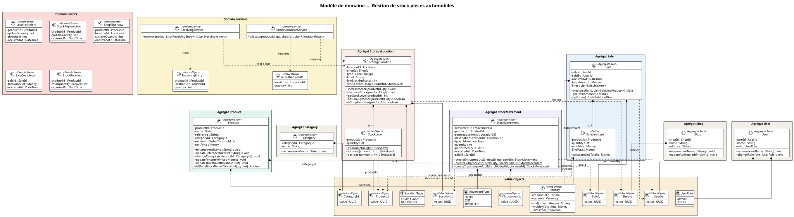
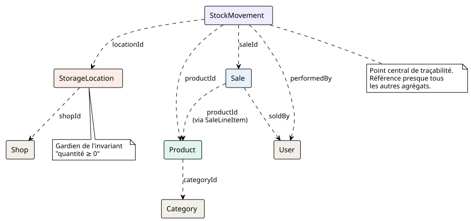

Diagramme UML global
Table of Contents
1. Diagramme de classes complet
Ce diagramme présente l’ensemble du modèle de domaine avec tous les agrégats, Value Objects, enums et leurs relations.

2. Diagramme des relations entre agrégats (simplifié)
Pour une vue d’ensemble rapide des dépendances :

3. Notes d’implémentation
3.1. Génération des diagrammes
Ces diagrammes PlantUML peuvent être générés automatiquement avec Antora en utilisant l’extension asciidoctor-kroki ou asciidoctor-plantuml.
Configuration dans antora-playbook.yml
asciidoc:
extensions:
- asciidoctor-kroki
attributes:
kroki-server-url: https://kroki.io
kroki-fetch-diagram: true3.2. Organisation des fichiers dans l’architecture hexagonale
src/
├── domain/
│ ├── model/
│ │ ├── product/
│ │ │ ├── Product.java
│ │ │ ├── ProductId.java
│ │ │ └── ProductRepository.java ← Port (interface)
│ │ ├── stock/
│ │ │ ├── StorageLocation.java
│ │ │ ├── LocationId.java
│ │ │ ├── LocationType.java
│ │ │ ├── StockLevel.java
│ │ │ └── StorageLocationRepository.java ← Port
│ │ ├── movement/
│ │ │ ├── StockMovement.java
│ │ │ ├── MovementId.java
│ │ │ ├── MovementType.java
│ │ │ └── StockMovementRepository.java ← Port
│ │ ├── sale/
│ │ │ ├── Sale.java
│ │ │ ├── SaleId.java
│ │ │ ├── SaleLineItem.java
│ │ │ └── SaleRepository.java ← Port
│ │ ├── category/
│ │ ├── shop/
│ │ ├── user/
│ │ └── shared/
│ │ └── Money.java
│ ├── service/
│ │ ├── StockAllocationService.java
│ │ └── ReceivingService.java
│ └── event/
│ ├── LowStockAlert.java
│ ├── StockReplenished.java
│ ├── ShopFloorLow.java
│ ├── SaleCompleted.java
│ └── StockReceived.java
├── application/
│ ├── SellProductUseCase.java
│ ├── ReceiveStockUseCase.java
│ └── TransferStockUseCase.java
└── infrastructure/
├── persistence/ ← Adapters (implémentent les Ports)
├── web/ ← API REST
└── auth/ ← Authentification